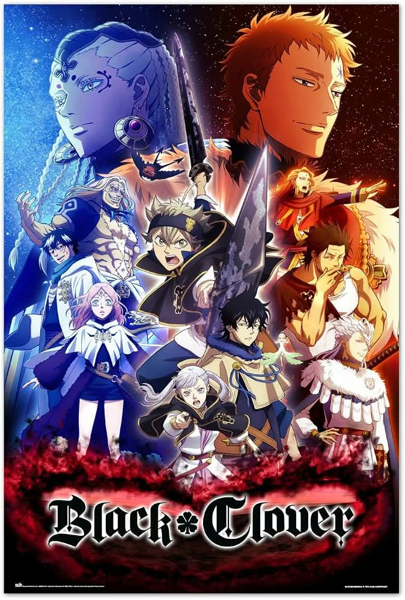

UNOFFICIAL FAN STORY · CHAPTER 01
Black Clover
An apprentice without the expected gift discovers a forgotten spell that helps protect a village, proving persistence can open unexpected doors.
Chapter One: A New Beginning
Asta had no spell to show at the village festival. While the other apprentices made sparks dance above the square, he volunteered to repair the old windmill that powered the lanterns.
Inside the mill, he found a page covered in symbols everyone assumed were decorative. He could not cast magic, but he could read the repeating pattern as a set of mechanical instructions. With rope, wood, and help from his friends, he restored the turning gears.
When the wind rose, the lanterns lit across the village. The elders recognized the symbols as an old practical spell meant to be understood by anyone willing to study it.
Asta smiled at the glowing square. His path would be different, but different did not mean impossible.
This is an unofficial, original fan-made story and is not affiliated with the official creators or publishers.